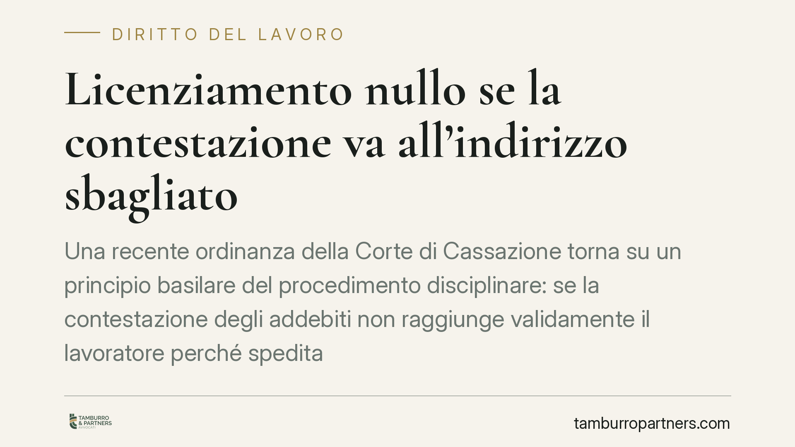

Licenziamento nullo se la contestazione va all'indirizzo sbagliato
Una recente ordinanza della Corte di Cassazione torna su un principio basilare del procedimento disciplinare: se la contestazione degli addebiti non raggiunge validamente il lavoratore perché spedita a un indirizzo errato, il diritto di difesa è compromesso e il successivo licenziamento è illegittimo. Un vizio che non si sana con atti posteriori.

Il caso
Un datore di lavoro avvia il procedimento disciplinare nei confronti di un dipendente e invia la lettera di contestazione degli addebiti. Il recapito, però, avviene a un indirizzo errato: il lavoratore non riceve l'atto e, di conseguenza, non ha modo di presentare le proprie giustificazioni nei termini previsti. Il licenziamento che ne consegue viene impugnato.
La Corte di Cassazione — con un'ordinanza di cui riportiamo gli estremi come indicati dalla fonte (n. 3857, *dato da verificare* quanto a numero, anno e contenuto esatto presso le banche dati ufficiali) — ha ricondotto la vicenda a un principio consolidato: la contestazione è il presupposto necessario del procedimento disciplinare, e deve essere messa nella concreta disponibilità del destinatario.
Inquadramento normativo
Il riferimento centrale è l'art. 7 della L. 300/1970 (Statuto dei Lavoratori), che impone al datore di lavoro di contestare preventivamente l'addebito al lavoratore e di garantirgli un termine per difendersi (almeno cinque giorni) prima di irrogare la sanzione. Senza una contestazione valida ed effettivamente conoscibile, il procedimento è viziato alla radice.
Sul piano del recapito interviene l'art. 1335 c.c., che disciplina gli atti recettizi. La lettera di contestazione è un atto che produce effetti nel momento in cui giunge all'indirizzo del destinatario. La norma pone una *presunzione di conoscenza*: l'atto si considera conosciuto quando arriva all'indirizzo del destinatario, salvo che questi provi di essere stato, senza sua colpa, nell'impossibilità di averne notizia.
Il punto decisivo è proprio questo: la presunzione opera solo se l'atto raggiunge l'indirizzo corretto. Se la spedizione è indirizzata a un recapito errato, la presunzione di conoscenza non scatta e l'atto non può dirsi validamente pervenuto. In questo caso il vizio non è della prova della ricezione, ma della stessa idoneità dell'invio a produrre effetti.
Due profili da non confondere
La materia richiede una distinzione che spesso viene sovrapposta.
Un conto è il principio di immutabilità della contestazione: riguarda la necessaria corrispondenza tra il fatto contestato e il fatto poi sanzionato. Il datore non può licenziare per una ragione diversa da quella addebitata.
Altro conto è il requisito della valida ricezione dell'atto recettizio, che attiene alla conoscibilità della contestazione da parte del lavoratore. È questo secondo profilo — non il primo — a essere compromesso quando la lettera finisce all'indirizzo sbagliato.
Un'ulteriore conseguenza: l'omessa (o invalida) contestazione non si sana con atti successivi. Non è possibile recuperare a posteriori un contraddittorio che non si è mai regolarmente instaurato.
Implicazioni pratiche
Per il datore di lavoro, la gestione dell'indirizzo di recapito non è un dettaglio formale: un errore sul destinatario può travolgere l'intero procedimento, con conseguente illegittimità del licenziamento e relative tutele a favore del lavoratore. L'aggiornamento dei dati anagrafici in fascicolo diventa quindi un presidio sostanziale.
Per il lavoratore, la vicenda conferma che il diritto di difesa nel procedimento disciplinare è effettivo e non meramente cartolare. Se la contestazione non è mai stata messa nella concreta possibilità di essere conosciuta, l'impugnazione poggia su una base solida.
Resta però da considerare l'onere probatorio con equilibrio. In ragione della presunzione dell'art. 1335 c.c., quando l'atto raggiunge l'indirizzo corretto spetta al lavoratore dimostrare l'impossibilità incolpevole di averne avuto notizia. Quando invece l'indirizzo è errato, la questione si sposta a monte: l'atto non è validamente pervenuto. Evitiamo quindi formule assolute del tipo "spetta sempre al mittente provare la ricezione": la regola è più articolata.
Cosa fare in concreto
- Verifica l'indirizzo del destinatario prima di ogni invio: usa i dati anagrafici più aggiornati e, in caso di dubbio, richiedili per iscritto.
- Conserva la prova della spedizione e del recapito (raccomandata A/R, PEC, ricevute), che documenta sia l'invio sia il luogo di consegna.
- Controlla i termini di difesa: assicurati che il lavoratore abbia avuto il tempo minimo per replicare dopo l'effettiva conoscibilità dell'atto.
- Se sei un lavoratore e non hai mai ricevuto la contestazione, raccogli ogni elemento utile a dimostrare l'erroneità dell'indirizzo e impugna tempestivamente.
- In entrambe le posizioni, fai esaminare la sequenza procedimentale per individuare eventuali vizi non sanabili.
Disclaimer
Contributo informativo a cura di Tamburro & Partners - Avv. Giuseppe Tamburro. Non costituisce parere legale.
Ogni storia di lavoro ha i suoi tempi.
Se gestisci HR e vuoi un confronto su contenzioso, ispezioni o licenziamenti, scrivi allo studio. Ti rispondiamo entro un giorno lavorativo.